11. Swap an enemy's model for your own
Goal: dress any enemy in a creature of your own. Your mesh needs its own skeleton and animations; nothing needs the UE mannequin or our rig, and no code is involved.
You need: Unreal Engine 5.3–5.8 with the plugin enabled (pictures: 5.7), Settings > Plugin Content ticked in the Content Browser (5.3–5.5: Show Plugin Content), the folder Proving Grounds: 3D Platformer Mechanics under Plugins, and a level with an enemy, for example the demo map Course2_EnemiesHazards. Your creature as an .fbx or .glb with one animation per clip. Open the level first.
Part 1: import the creature and check its scale (2 minutes, saves an hour)
A creature that plays squashed, or whose bones are a tiny cluster at its feet, was exported with the mesh and the skeleton at different scales (common with FBX-to-glTF converters). Check before you build on it.
- Drag your
.fbxor.glbinto your own Content Browser folder (here MyMonster, not inside the plugin folder) and accept the defaults. You get a Skeletal Mesh, a Skeleton, a Physics Asset, the materials and one Animation Sequence per clip; a glTF import puts them in sub-folders (here the Skeletal Mesh is in MyMonster > SK_LabBot_Crab > SkeletalMeshes).
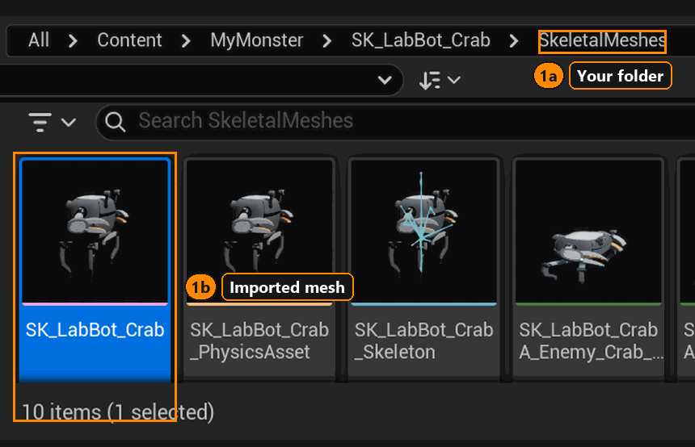
- Double-click the Skeletal Mesh to open it. In the viewport toolbar open Show and choose Bones (5.3: Character > Bones).
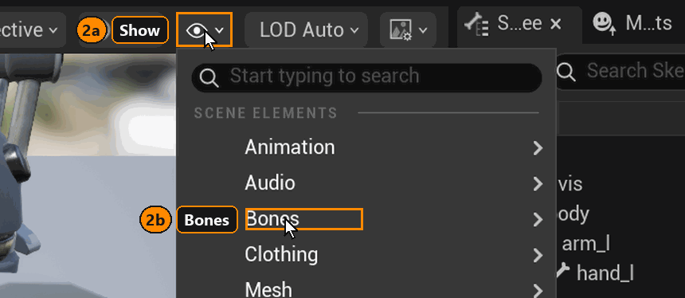
Then pick All Hierarchy.
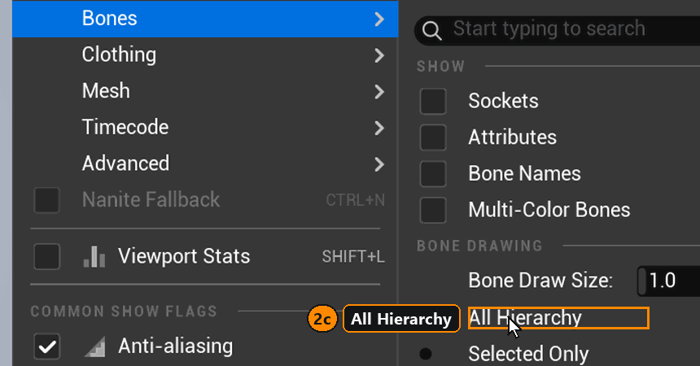
The bones must sit inside the body, from the feet to the head. If they are a small cluster, or much bigger than the body, stop: fix it in your 3D tool (apply scale, re-export), not in Unreal.
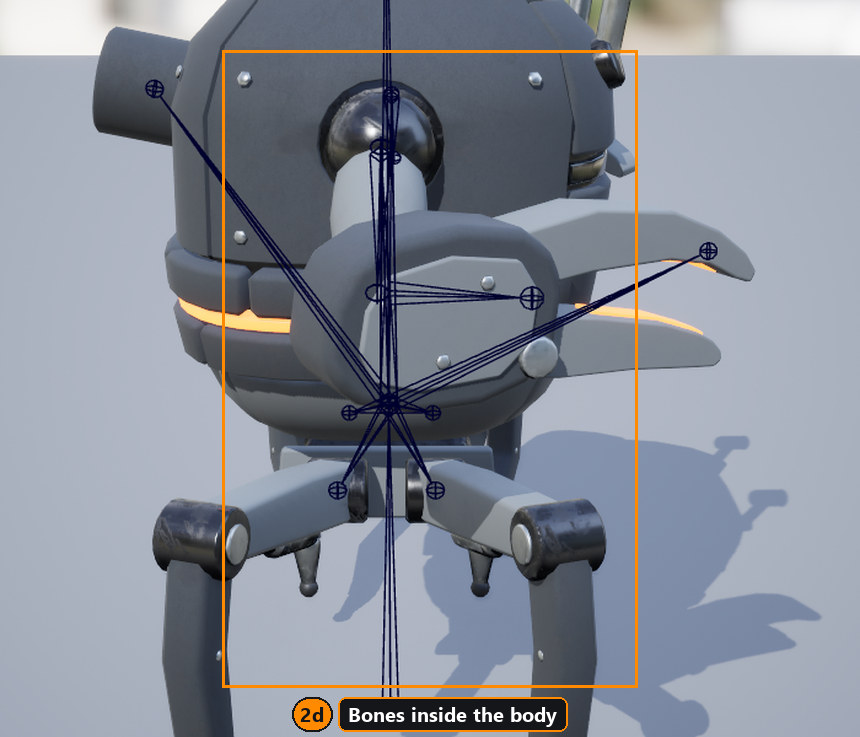
Part 2: make the look
- Duplicate the theme you play with into your own folder, and keep the original as a reset point. In the Content Browser go to Plugins > Proving Grounds: 3D Platformer Mechanics > Themes; the demo courses use DA_Lab_Course.
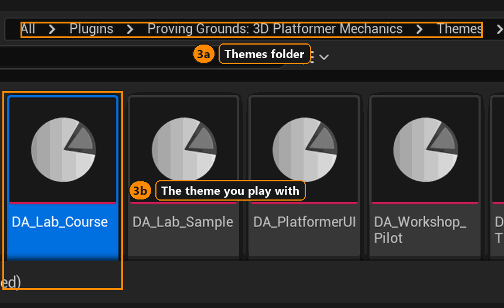
Right-click it, choose Duplicate, and put the copy in your folder (here DA_MyTheme in MyMonster).
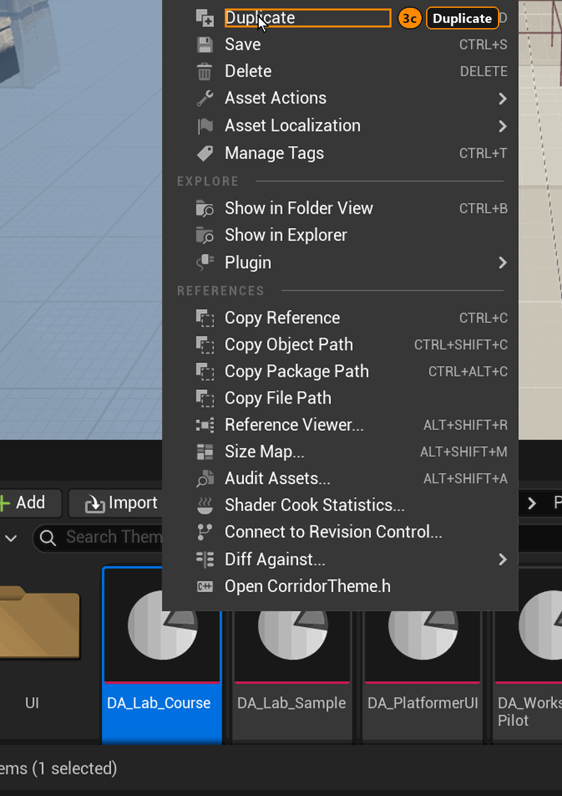
- Open the copy. In the Details search box type Enemy Looks and press the + at the Enemy Looks row. A new entry appears at the end of the list.
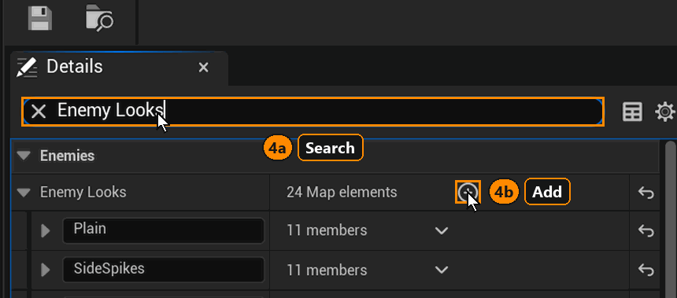
Type a name into its key field, for example MyMonster.
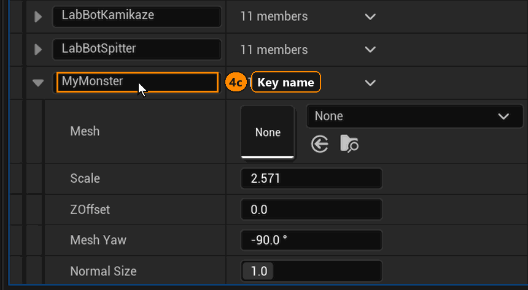
- Fill in the look:
- Mesh: your Skeletal Mesh.
- Scale: the size of your mesh in centimetres decides it. The enemy's hit box is built from the mesh bounds times Scale times Normal Size.
- Mesh Yaw: 0 if the creature's front is its +X, -90 if its front is +Y (what glTF imports often give). With the right value it faces the way it walks.
- Normal Size: how big it plays. Aim for a top between 120 and 190 cm so a full jump lands on it.
- ZOffset: moves the mesh up or down from the stand-in's feet (the editor writes it as one word).
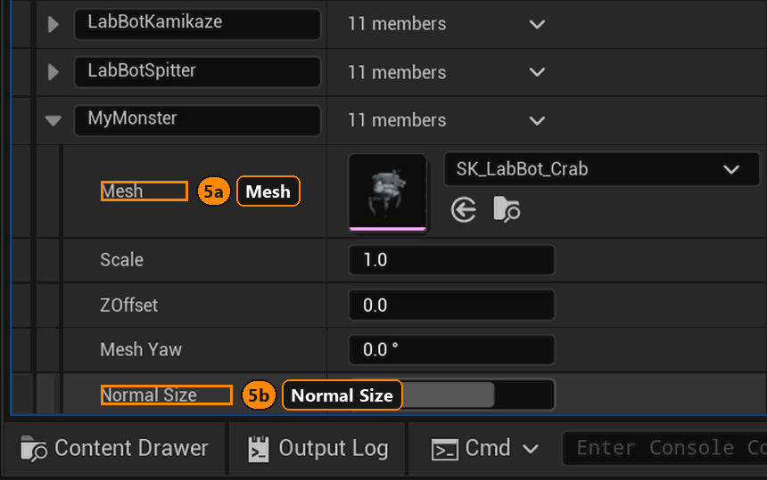
Open Clips and add one entry per state with +: the key and its Animation Sequence. The keys most creatures need are Idle, Move, DeathBounce (stomped) and DeathSpin (spun or thrown); the crab here brings seven clips (Idle, Move, DeathBounce, DeathFlatten, DeathSpin, Falling, Landed). More keys exist (Attack for shooters, Windup for chargers, Turn and others); a missing key falls back (Windup to Idle, DeathFlatten to DeathBounce, Landed to Falling).
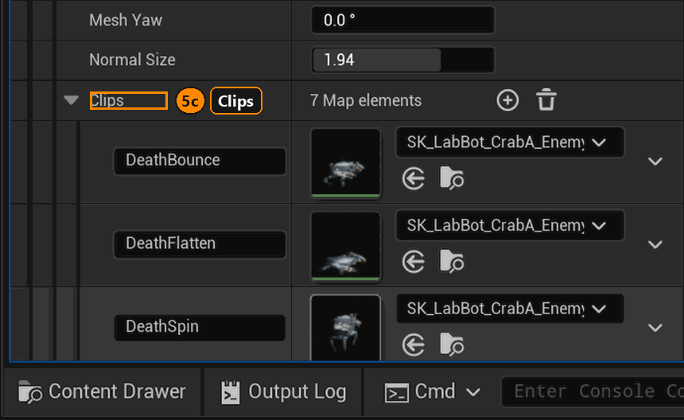
Part 3: use it
- Select BP_Control in the level and, in its Details, set 3 Theme > Theme to your copy (DA_MyTheme). Type Theme in the search box to find it.
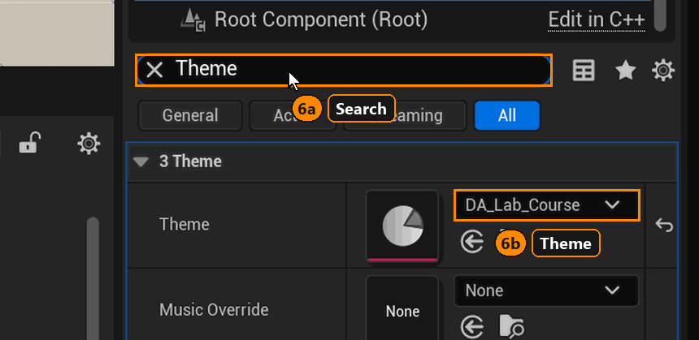
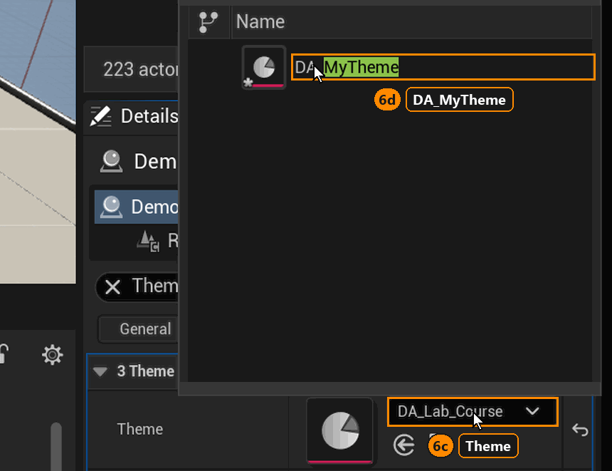
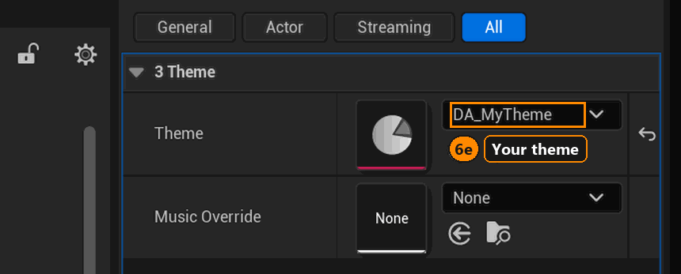
- Select an enemy in the level and type your key into Look Name (None = the look of its kind).
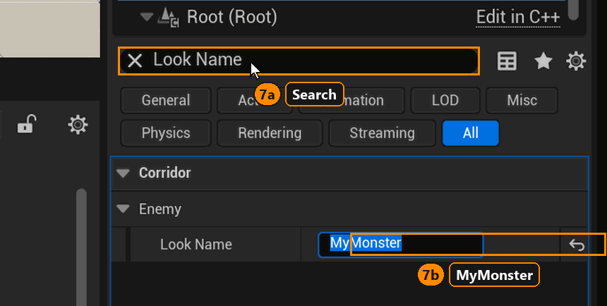
Restart Play after changing a theme.
Result
Click Play and walk up to the enemy: it wears your creature.
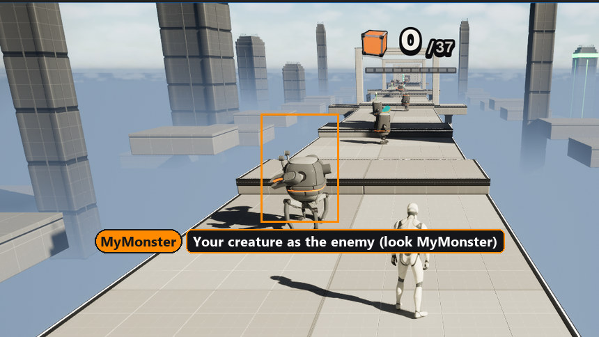
Check in Play: it faces its walking direction and plays Idle and Move; it dies on a stomp and when spun (the death clip plays to its last frame); it hurts you on contact; it comes back after your respawn.
If it looks wrong: if the creature faces sideways change Mesh Yaw by 90. If it is too big or too small change Normal Size first, Scale second. If it sinks into or floats above the floor, repeat the scale check above.